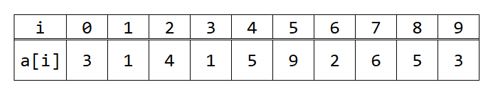
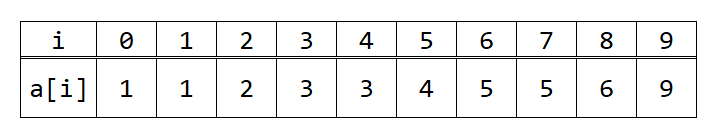
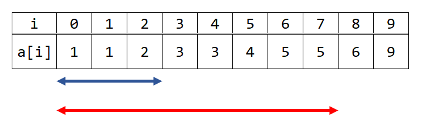
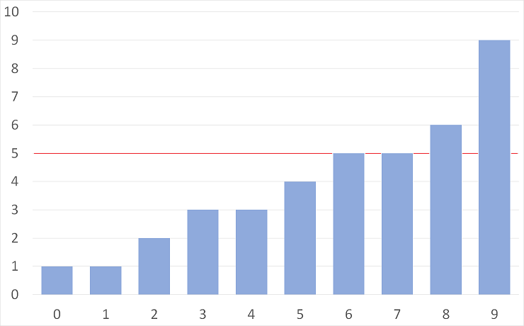
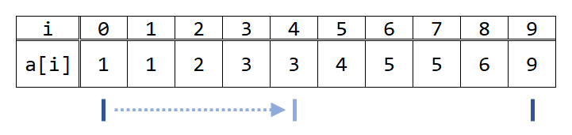
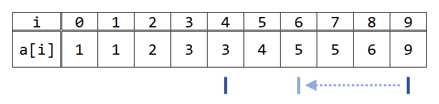
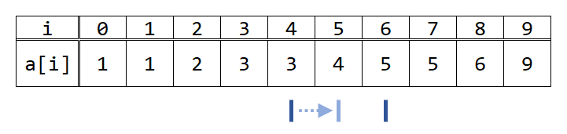
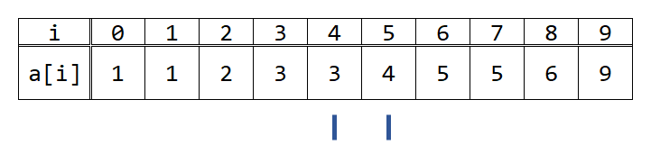

競技プログラミング講習/二分探索
概要
今回は、二分探索について解説します。今まではどのように探索するかを解説してきましたが、今回は探索を高速化する方法です。計算量を見積もってみて、愚直にやると間に合わないが、二分探索を使うと計算量が削減できて間に合う場合があります。
重要語
二分探索
（広義）単調増加の配列の中からある特定の値を探索する
logaN
Nがaの何乗かを表す
必要語
今回の必要語はありません。
二分探索
二分探索は、「要素数Nの配列Aの中に、K以下の数は何個あるか」といった問題の時に役立ちます。具体的には、Q個のクエリが投げられて、各クエリは、「Ki以下の数は、配列Aの中に何個あるか」という問題を考えてみます。制約は以下の通りです。
- 1 ≤ N, Q ≤ 2×105
- 0 ≤ K ≤ 109
- 0 ≤ Ai ≤ 109
- i ≠ jのときAi ≠ Aj
- 入力はすべて整数
愚直にやってみる
まずは素直に、N個すべての要素をチェックして求めてみましょう。この時の計算量はO(QN)です。しかし、制約を見ると、N及びQが最大で2×105となるため、これではTLEです。 そこで活躍するのが、二分探索です。ここから、二分探索のやり方を見ていきましょう。
愚直解
#include <bits/stdc++.h>
using namespace std;
int main() {
int n, q;
cin >> n >> q;
vector<int> a(n);
for (int i = 0; i < n; i++) cin >> a[i];
// ここでQ回
for (int i = 0; i < q; i++) {
int k;
cin >> k;
int ans = 0;
// ここでN回
for (int j = 0; j < n; j++) {
if (a[j] <= k) {
ans++;
}
}
cout << ans << endl;
}
return 0;
}
ソート
ここで、例として下図のような配列Aを考えてみます。

ここで突然ですが、Aを昇順（小さい順）にソートします。ソートすることによって答えが変わることはありませんので、この操作は問題ありません。

言い換えを考える
では、ソートされたこの状態で、K以下の数がいくつあるかが知りたいわけですが、例えばKが2のときを考えてましょう。 2以下の数というのは、図の青い矢印の部分です。また、5の時も考えてみると、図の赤い矢印の部分です。 ここで、ソートした重要性が見えてきたでしょうか。K以下の数は必ず、0から「ぎりぎりKを超えないところ」までにあるのです。 では、この「ぎりぎりKを超えないところ」はどのように見つければよいでしょうか。

具体的に考える
Kが4の時を考えてみます。この時、Aをグラフにすると以下のようになります。

この時、探索領域の左端をl、右端をrとして、lの指す値は必ず5以下になっているように、rの指す値は必ず4より大きくなっているように維持しながら、探索領域を狭めていくことを考えます。
まず、lを0、rを9とすると、条件を満たします。次に、lとrの（相加）平均値（の切り捨て）を見ます。すなわち、4（=floor((0+9)/2)）を見ます。A[4]は3、すなわち4以下なので、lを4にします。

次に、再びlとrの平均値を見ます。floor((4+9)/2)=6で、A[6]は5、すなわち4より大きいので、rを6にします。

さらに、lとrの平均値を見ます。floor((4+6)/2)=5で、A[5]は4、すなわち4以下なので、lを5にします。

ここで、lとrの差が1になったので、探索を終了します。

この時、A[l]は必ず4以下、A[r]は必ず4より大きいという状態が保たれるように、lとrを近づけていったので、lは4以下の中で最も左端、rは4より大きい中でももっとも右端にあります。したがって、4以下の数は添え字が0からlまでの区間（両端含む）にあり、それ以外にはありません。よって、この時の答えはl+1個（＝r個）です。
もう少し一般化
A[l]は必ずK以下、A[r]は必ずKより大きいという条件を保ったまま探索していきます。ここで、先ほどはlを0、rをN-1としてきましたが、これでは最初から条件を満たさない場合があります（先ほどの例でK=100の時など）。そこで、lを-1、rをNとします。一見、範囲外アクセスをしそうですが、実はそのようなことは起こりません。なぜなら、実際に配列の値を見るのは(l+r)/2です。lとrの差が1の時は探索を終了しますから、最も近くても(-1+1)/2で0になり、(N-2+N)/2でN-1となります。よって、これでも範囲外アクセスを起こすことなく、番兵の存在を仮定して考えることができます。これでlとrの初期値が決まりました。ここから、(l+r)/2を見て、A[(l+r)/2]がK以下なら、lを(l+r)/2に、そうでなければrを(l+r)/2にします。最終的にlとrの差が1になったら探索を終了します。
計算量
では、この時の計算量はどうなるでしょうか。一回の探索ごとに、探索領域はおよそ二分の一になっています。例えば先ほどの例だと、10->6->3->2と、確かにおよそ二分の一ずつ減っています。Nの時は、N->N/2->N/4->...くらいとなることが予想されます。ここで、logという対数関数を考えます。一般に、1でない正の実数aと正の実数Nに対し、N=apとなる実数pはただ1つに定まるので、これをlogaNと表します。平たく言えば、これは、「Nはaの何乗か」です。例えば、log28=3、log39=2です。よって、この対数関数を使って表すと、探索回数はおよそlog2N回と言うことができます。よって、1回あたりの計算量はO(log N)です。O記法では、底（前述の例のaをこう言い、「てい」と読みます）の違いは定数倍だとみなされるので、省略することが多いです。
さて、具体的にO(log N)はどれほど高速なのでしょうか。今回はNは最大で2×105なので、log2(2×105)=17.6...となり、およそ18回くらいの探索で終了するということがわかります。愚直に探索するとそのまま2×105回の探索が必要でしたから、劇的な高速化に成功しました。全体としての計算量はO(Q log N)となり、十分高速です。
実装例
実装例
#include <bits/stdc++.h>
using namespace std;
int main() {
int n, q;
cin >> n >> q;
vector<int> a(n);
for (int i = 0; i < n; i++) cin >> a[i];
// aをソート
sort(a.begin(), a.end());
for (int qi = 0; qi < q; qi++) {
int k;
cin >> k;
// l,rと平均用のmidを宣言
int l = -1, r = n, mid;
// r-lでもいいが、lとrが入れ替わった時などにバグらせづらくなるのでabsをつけた方がおすすめ
while (abs(l - r) > 1) {
// midをl,rの平均に
mid = (l + r) / 2;
// a[mid]がk以下かどうか見る
if (a[mid] <= k) {
l = mid;
} else {
r = mid;
}
}
cout << l + 1 << endl;
}
return 0;
}
一般化
今まではソートされた配列を考えてきましたが、さらに一般化して関数f(x)と条件Cを考えます。
二分探索を適用しやすいとき
ここで、条件Cが単調であるときは二分探索が適用できます。例えば、ある値rで条件Cを満たすならばr以上の値ではすべて条件Cを満たす、ある値rで条件Cを満たすならばr以下の値ではすべて条件Cを満たす、などです。平たく言えば、xを小さい方から大きい方に動かしていった時、条件Cのtrueとfalseが切り替わるところが1箇所しかないような場合です。このような場合、二分探索が適用できます。
f(x)が連続なとき
今までは、xを離散的に捉えていましたが、実数でも可能です。例えばa≤x≤bで定義される広義単調増加な関数f(x)を考え、f(x)=tとなるxの値を求めることを考えます。この場合、ジャッジでは絶対誤差および相対誤差が許容されることが普通です。AtCoderの場合は大抵10-6のことが多いです。右端と左端をこの許容誤差の程度まで近づけることによって、ほとんど厳密解に等しい結果を得ることができます。二分探索の終了条件は、while (abs(l - r) > 1e-6)などと書いてもいいですが、あまり小数による計算や比較をしたくないため（cout << 1e20 + 1 - 1e20 << endl;などを実行してみることで確認できます）、回数によって打ち切ることをお勧めします。
最大値の最小化/最小値の最大化
このような問題設定のとき、二分探索を適用できることが多いです。最大値の最小化を例にとると、この多くの問題において、最大値を小さい方から徐々に大きくしていくことを考えると、徐々にシビアになってきて、最終的には条件Cを満たさなくなってくる、といった単調性があります。また、最大値がXであるとすると、これは条件を満たすかといった判定問題に帰着することができます。すると、各要素では最大値がXと固定されましたので、判定問題が解きやすくなることが多いです。
このように、直接の値を決めるのは難しくても、最大値/最小値をXと決め打ってやると、簡単な判定問題に帰着することができ、さらには単調性が見られる、となることが多いです。
練習問題
理解できたか確認するために、練習問題があります。以下の問題を解いてみてください。